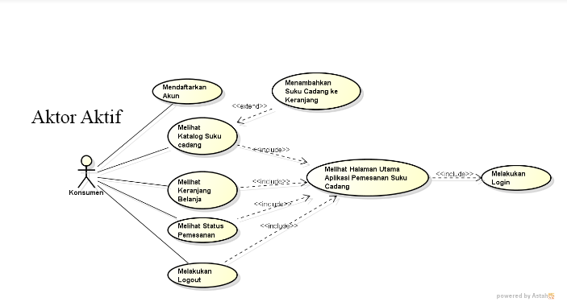
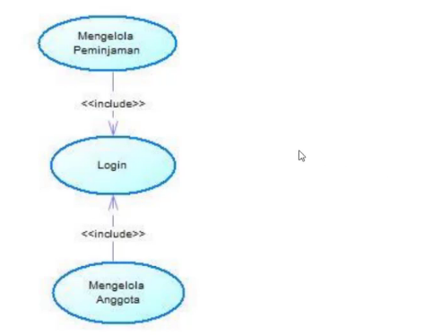
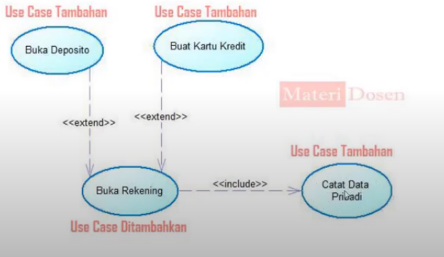
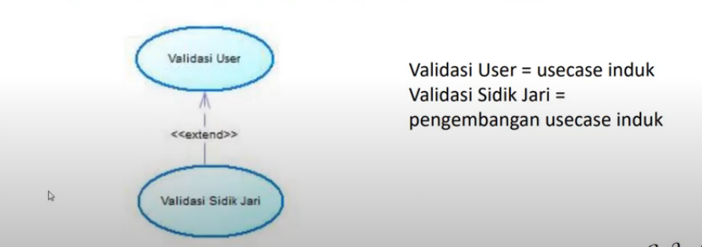
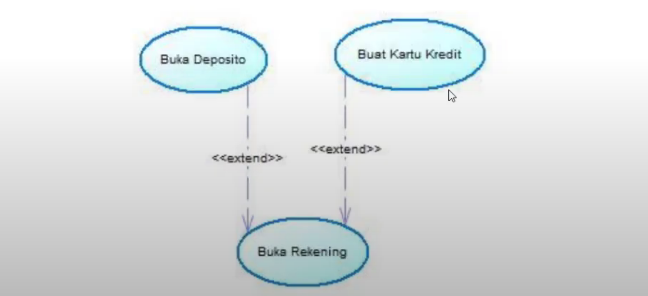

NIM: 1811500085
NAMA: Maulana Malik Fajari
KELOMPOK: TI6A
Hasil saduran pada hari (Rabu, 28 April 2021):
Diperbarui pada hari (Rabu, 05 Mei 2021):
Apa itu Usecase Diagram?
Use case diagram merupakan diagram yang menggambarkan hubungan antara aktor dengan sistem. Use case diagram bisa mendeskripsikan sebuah interaksi antara satu atau lebih aktor
dengan sistem yang akan dibuat. Use case diagram juga bisa digunakan untuk mengetahui fungsi apa saja yang ada di dalam sebuah sistem dan bisa juga mempresentasikan sebuah
interaksi aktor dengan sistem. Komponen tersebut kemudian menjelaskan komunikasi antara aktor, dengan sistem yang ada. Dengan demikian, use case dapat dipresentasikan dengan
urutan yang sederhana, dan akan mudah dipahami oleh para konsumen. Manfaat dari use case sendiri adalah untuk memudahkan komunikasi dengan menggunakan domain expert dan juga end
user, memberikan kepastian pemahaman yang pas tentang requirement atau juga kebutuhan sebuah sistem.
Komponen yang terdapat pada usecase diagram?
1. Sistem
2. Aktor
3. Usecase
Beberapa relasi pada usecase diagram:
1.Association
2.Generalization
3.Dependency
Usecase Diagram:
Umumnya gambar sebelah kiri pada usecase diagram disebut dengan Aktor Aktif dan Jika disebelah kanan maka disebut Aktor Pasif.

Apa itu Include dan Extend?
Singkatnya include adalah disertakan dan Extend adalah Pengembangan
-Include:
1. Suatu usecase lain membutuhkan usecase ini untuk syarat dapat dijalankan.
2. Arah panah include mengarah pada usecase yang dibutuhkan.
3. 1 usecase adalah bagian dari usecase lainnya.
Contoh: untuk manajemen data suku cadang seperti pelayan toko/admin yang login ke sistem
♦Usecase Login Merupakan syarat/selalu dipanggil terlebih dahulu sebelum dijalankannya usecase Mengelola Anggota atau usecase Mengelola Peminjaman.

-Extend:
1. Suatu usecase yang dapat berdiri sendiri meski tanpa usecase yang lain.
2. Arah panah exclude mengarah pada usecase yang menjadi induk.
Contoh: Setelah melihat suku cadang, konsymen dapat memilih suku cadang, lalu konsumenpun dapat melihat keranjang belanja setelah memilih suku cadang(hasil extend memilih suku cadang)

♦Usecase Validasi User merupukan usecase yang ditambahkan/dikembangkan(usecase induk), dimana usecase ini dapat berdiri tanpa usecase tambahan (Validasi Sidik Jari).
Contoh: Setelah pengguna melakukan validasi user, pengguna dapat mengembangkannya dengan validasi sidik jari atau tidak.

♦Usecase Buka Rekening merupakan usecase yang ditambahkan/dikembangkan (Usecase Induk) Sehingga dapat berdiri sendiri usecase ini merupakan tambahan yang berasal dari pengembangan extend dari usecase Buka rekening.
Contoh: Pengguna melakukan pengembangan dengan Buka Deposito atau Buat Kartu Kredit.

Apa itu Generalisasi? Generalisasi adalah rician atau pecahan usecase